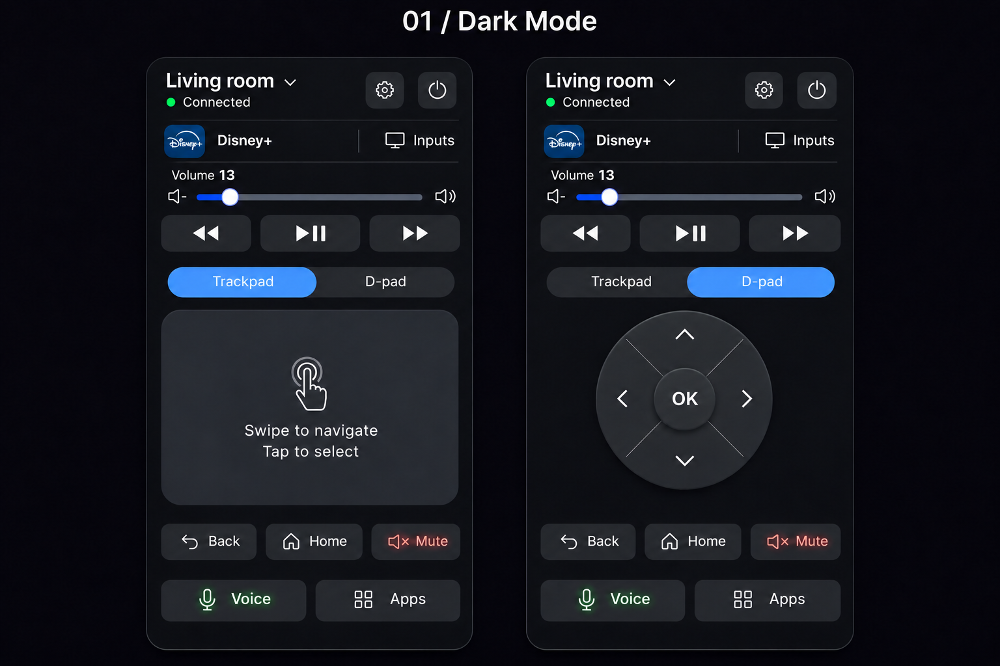
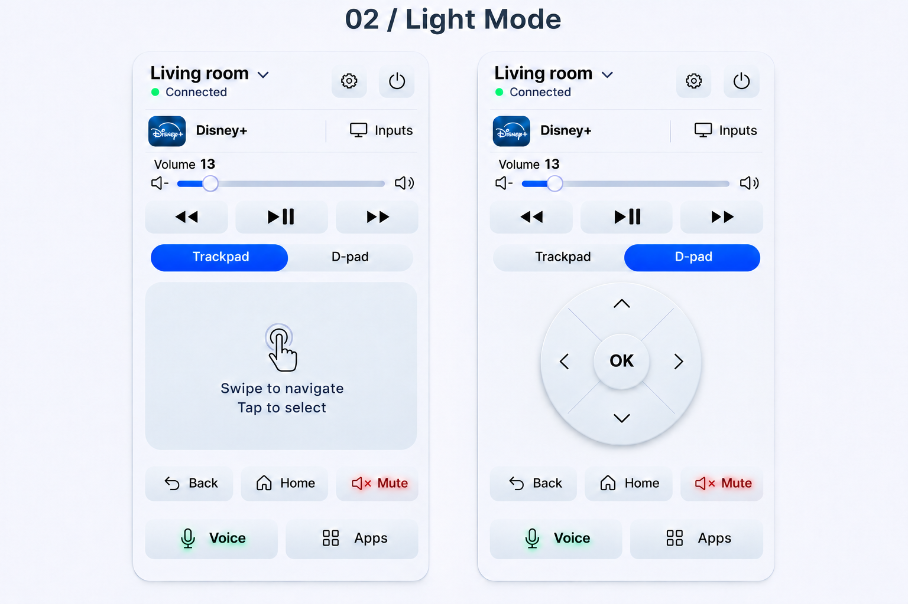
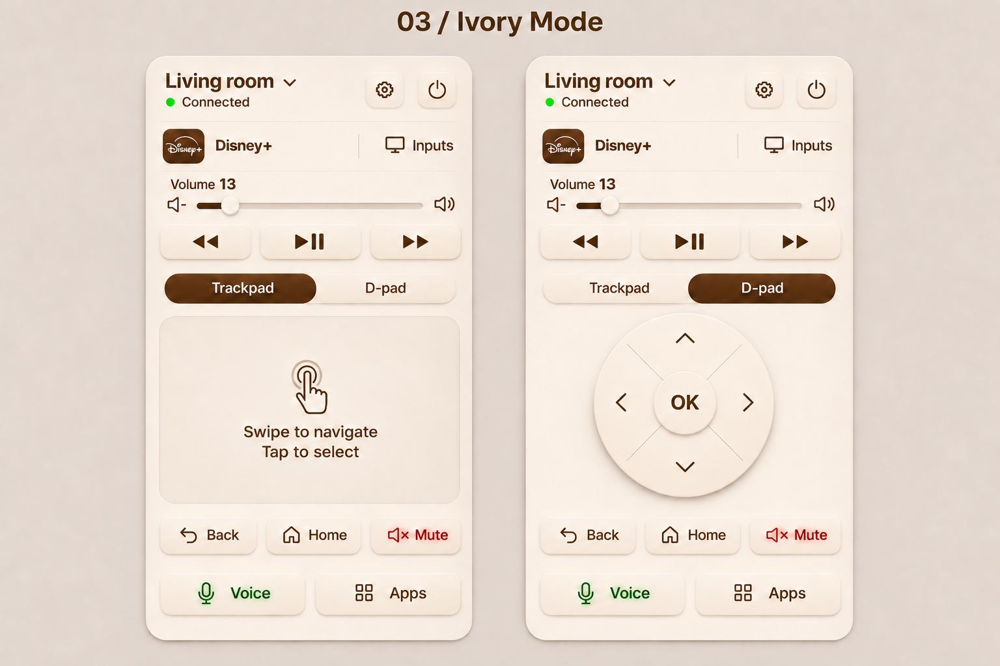
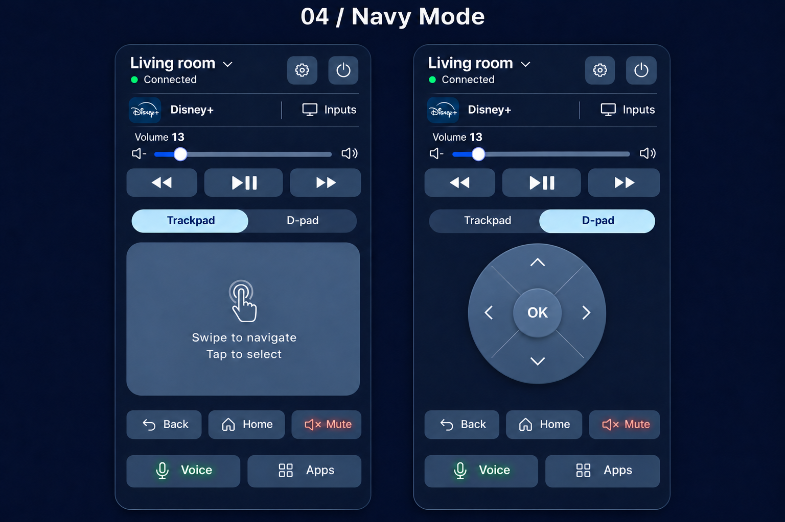
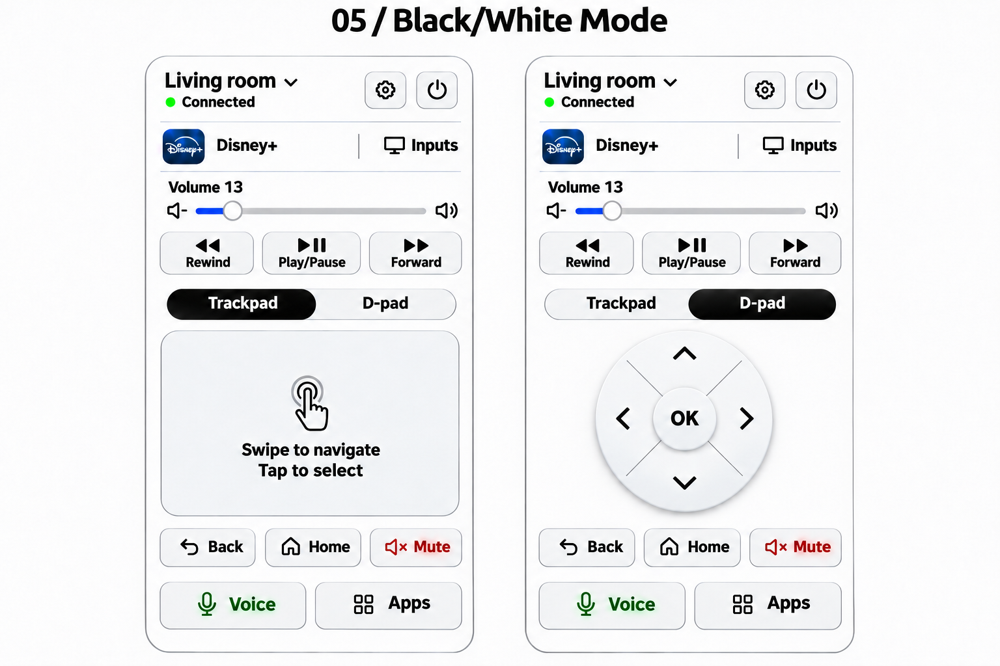
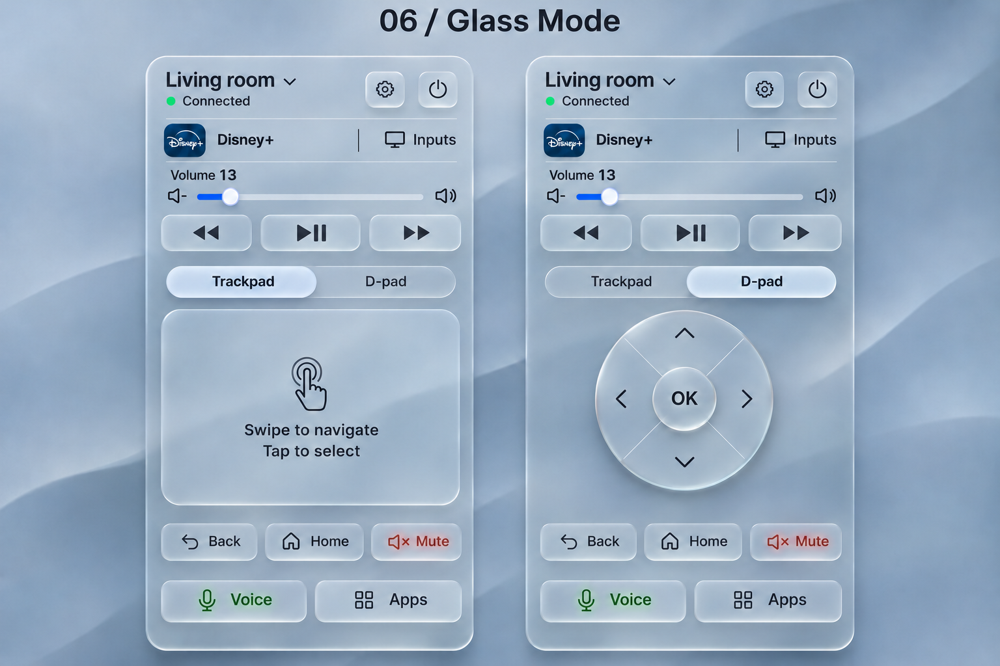

Developer handoff · November 11, 2026
One remote. Six skins.
Dark Mode, Light Mode, Ivory Mode, Navy Mode, Black/White Mode and Glass Mode. Each uses the same control order and includes Trackpad and D-pad views.
This is a design handoff with reference CSS and integration guidance, not a connected or deployed TV remote.
Start here
Developer guide · Design specification · Shared layout and theme CSS · Generation notes
| Shared requirement | Specification |
|---|
| Layout | Device → Source → Volume → Playback → Mode → Navigation → Back/Home/Mute → Voice/Apps |
| Trackpad | 456 × 300 px at a 504 px reference card width; responsive ratio 38:25, identical for all skins |
| D-pad | Raised circular disc, four fine diagonal divisions, open chevrons and round raised OK button |
| Volume | Slider uses the entire row; Mute is beside Back and Home |
| Playback | One button with a combined play triangle and pause bars; toggles play/pause |
| Voice / Mute | Faint green Voice text/icon glow; faint red Mute text/icon glow |
| Glass | Clear translucent surfaces, subtle frosting and edge highlights, legible dark labels |
Implementation geometry in the specification overrides small spacing or dimensional variations in the generated PNGs. The CSS is a reference, not a complete app.
Dark Mode
Open full-size PNG · Trackpad and D-pad modes
Light Mode
Open full-size PNG · Trackpad and D-pad modes
Ivory Mode
Open full-size PNG · Trackpad and D-pad modes
Navy Mode
Open full-size PNG · Trackpad and D-pad modes
Black/White Mode
Open full-size PNG · Trackpad and D-pad modes
Glass Mode
Open full-size PNG · Trackpad and D-pad modes
To make it live
Build the shared UI, select a platform and TV/device adapter, implement pairing and real state/commands, then test on the supported hardware before release. Full behavior and integration requirements are in the developer guide.